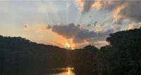

Photo Project |
|
| Home Photo Project Infographic Project Bookmark Press Project Video Production Project | |
|

Click here to see the finishedphoto project |
This photo project in my opinion was my favorite because I had creative freedom with photos of my choice. With the use of Adobe Photoshop, I was able to take a random photo that I took prior to this class and turn it into something great. For almost every photo we had to either crop it, change the rule of thirds, the filters, or even the perspective of the lense. We were graded on the photo capture, composition of photos, photo editing, and organization/presentation.
|
| Home Photo Project Infographic Project Bookmark Press Project Video Production Project | |
|
©2024 Jocelyn Langer | |